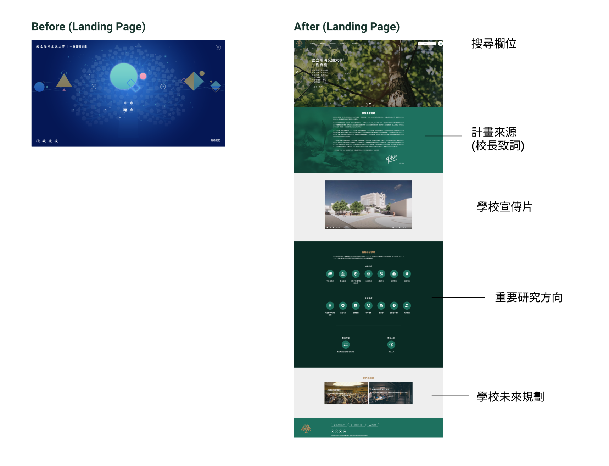
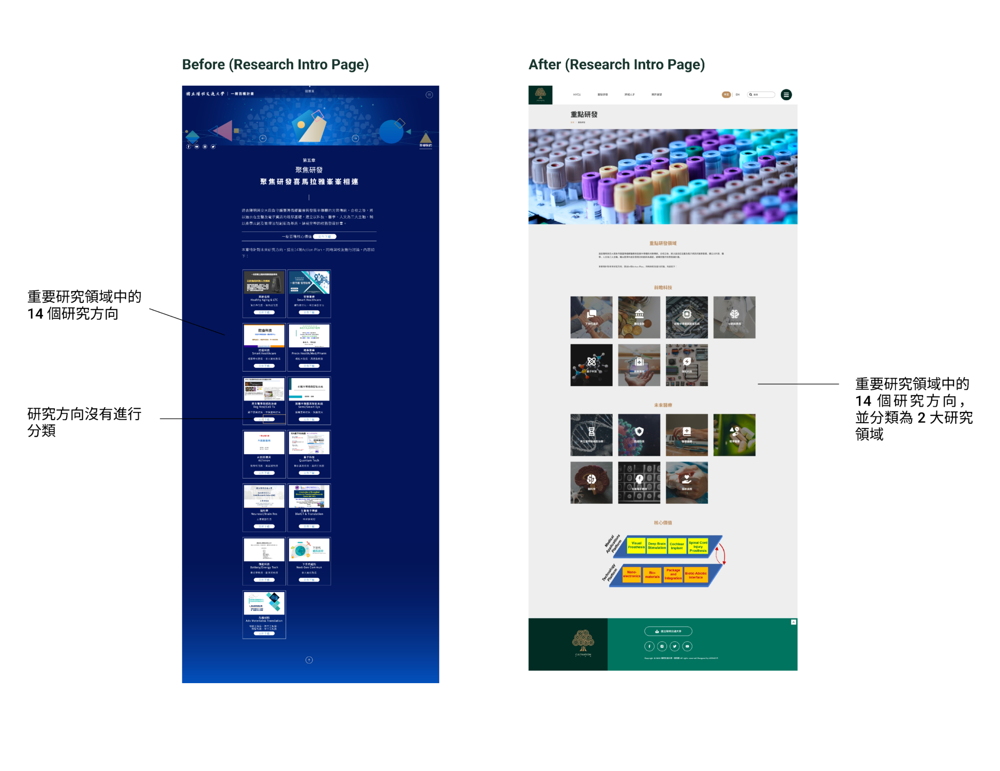
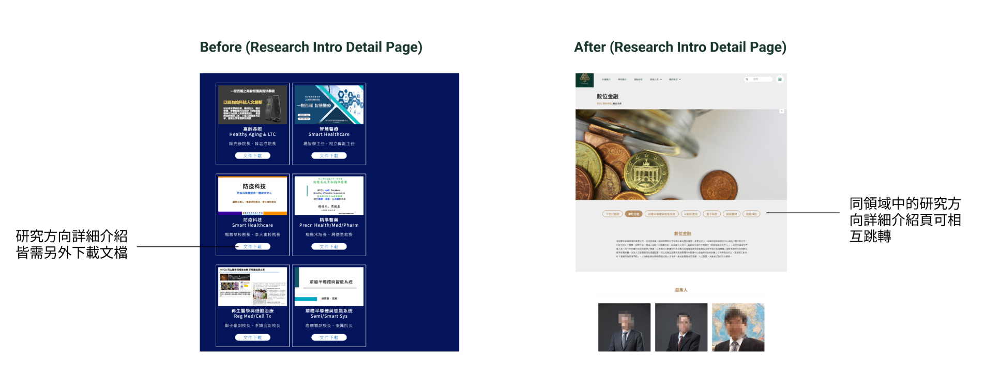
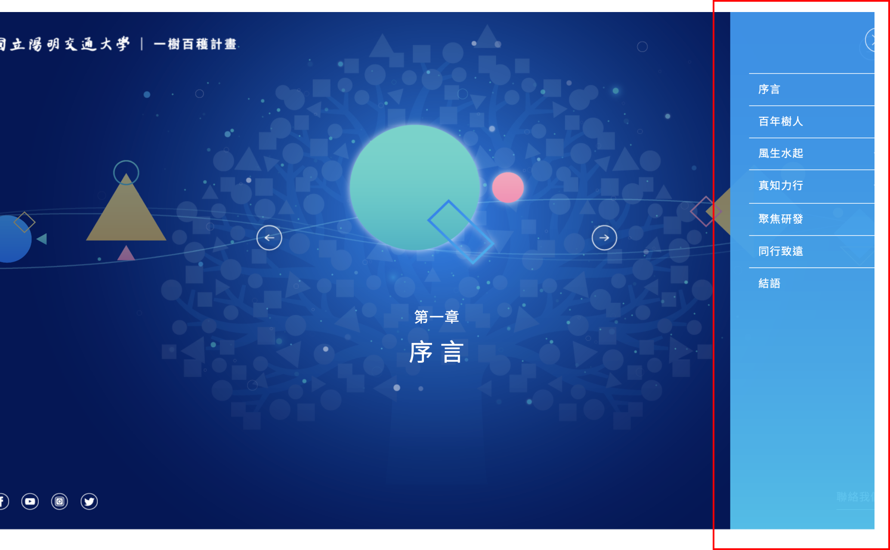
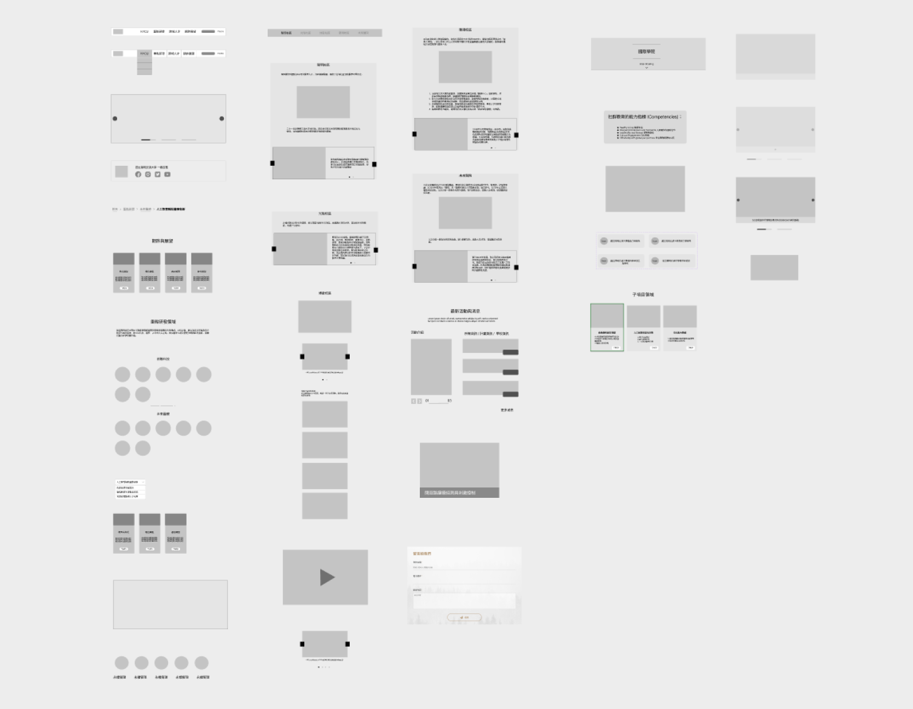
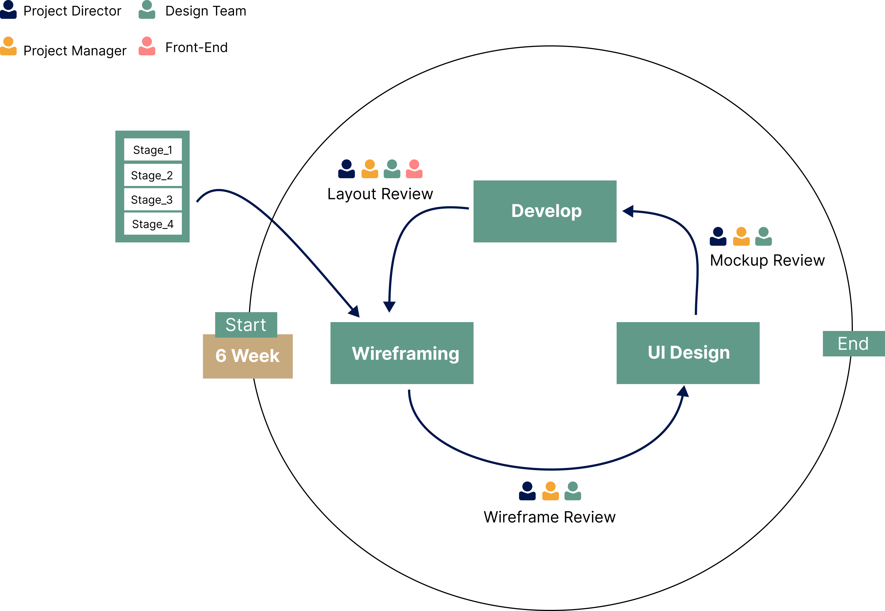
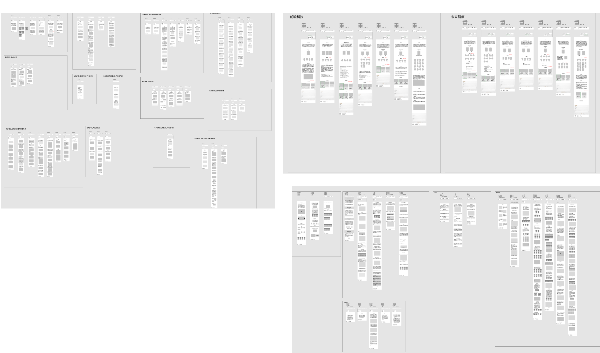
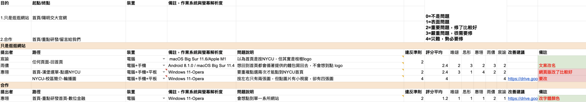

Timeline
Team
My Role
Outcome
Mar. 2022 - Jul. 2022 (5 months)
2 Project Manager, 2 UX Designer, 1 UI Designer, 1 Visual Designer, 1 Front-end Engineer, 3
Copywriter
Project Management, UX Design (Information Architecture, Wireframe, Mockup Review), Testing
RWD Website (The first version
was launched on June 1, 2023,
and will continue to make improvements to enhance the content and usability.)
Timeline
Mar. 2022 - Jul. 2022 (5 months)
Team
2 Project Manager, 2 UX Designer, 1 UI Designer, 1 Visual Designer, 1 Front-end Engineer, 3
Copywriter
My Role
Project Management, UX Design (Information Architecture, Wireframe, Mockup Review), Testing
Outcome
RWD Website (The first version
was launched on June 1, 2023,
and will continue to make improvements to enhance the content and usability.)
Summary
The "Clutivation Plan" project, initiated by the President of National
Yang Ming Chiao Tung
University (NYCU), aims to showcase the university's future plans, important
research directions, and
research achievements to external audiences. The "Clutivation Plan" website serves as an
informative
platform for this purpose, with the first version launched in July 2021. In response to
feedback from
alumni and the need for improved user experience, NYCU has entrusted the Communication and
Outreach
Office with the planning and design of the second version of the website in 2022.
Target Audience
Primary User: Industry alumni, aged 40 and above.
Engage in website to learn about university's future research directions, boosting
willingness to collaborate.
Secondary User: Current students / prospective students and
their parents.
Enhance talent retention competitiveness by seeking information on
university's
future development and
research directions.
Problem Statement
We conducted usability testing with 4 targeted users on the first version and have the following
3 key conclusions:
1. Complex information architecture and lengthy information retrieval
process:
- Unclear category titles that make it difficult
for users to determine where
their desired information
is located.
- Information related to the school's research areas, which users
generally consider important,
requires
multiple steps to access.
2. Website interaction design not aligned with user
habits:
- Significant differences compared to typical informational websites,
resulting in a learning curve
for
users to adapt to the new interaction design.
3. Content presentation decrease browsing motivation:
- Information related to the school's research areas requires additional file
downloads.
- Content appears disorganized and lengthy, reducing browsing motivation.
Goal
The team's overall goal is to enhance the website's browsing experience and
traffic, including:
- Restructuring the website's information architecture for more efficient
information retrieval.
- Aligning interactive elements with standard conventions to reduce user
learning costs.
- Improving content richness and readability by optimizing formatting and
presentation.
My Contribution

Challenge
The project faces 3 key development challenges:
- Content Transition: The school's preference to retain the
original content from the first version of
the website without modifications poses a challenge in transitioning to the new version.
- Content Writing: Varying levels of
information provided by
different laboratories make it challenging
to ensure consistent and high-quality content writing across the website.
- Cost Control: Managing the extensive
amount of data on the
website and presenting it in a clear and
professional mannerwithin the allocated budget is a significant challenge.
Some Outcome Example
# Landing Page

Strategy 1: Enhancing landing page information for effective promotion
by
diversifying content
Optimizing the landing page to maximize promotional benefits
by incorporating important
information that users want to know about the school, instead of a gallery-like
UI component
used in the first version.
Strategy 2: Enhancing information browsing efficiency with improved
navigation options
Providing two types of information search options:
1. Site-wide search for users with specific information
needs, enabling them to quickly
access
target information through keyword search without multiple navigation
steps.
2. Highlighting important research areas (i.e., key
laboratories) on
the landign page as part of
the landing page, serving as a promotional tool and facilitating
faster access to
important
information for users who are exploring without specific
information needs.
# Research Intro Page

Strategy 1: Categorizing Information
Categorizing 14 key research areas of the school into 2 domains for clearer information
retrieval.

Strategy 2: Adding detailed introduction pages for each research
direction
Creating dedicated detailed introduction pages for each research direction, eliminating the
need to download files for viewing. Also, adding
cross-linking between pages of
the same
research field for easy navigation.
Design
Information Architecture: Card Sorting Workshop

Key Finding:
Upon reviewing the content of the first version of the website, it was observed that the
naming of category titles lacked effectiveness and didn't clearly
convey the scope of
information covered. To improve the clarity of category titles on the new
website, I will
conduct an internal information architecture design workshop after reviewing the content of
the first version of the site.
I led a team workshop to redesign the website's information
architecture, creating a new sitemap and determining page title names
through collaborative
decision-making.

Wireframe

Wireframe Component:
Due to the substantial volume of data and significant variation in
content richnessacross
pages, customization options were limited due to cost
considerations. Therefore, I
prioritized the goals of "staying within budget" and "maximizing component efficiency." I
began by conducting a thorough review of the copy content of each page, followed by the
creation of adaptable components that could accommodate various data scenarios.

In the process of Wireframe development, we adopted a Scrum-like
approach, considering the tight project timeline. The
Wireframe creation was divided
into 4
stages, following the SiteMap structure from top to bottom. Once each stage of
Wireframe was
completed, it was delivered to the UI designer for Mockup
design. After confirmation
without any
issues, the finalized design was then handed over to the
frontend development team
for
implementation.

Iteration
Heuristic Evaluation
To ensure website usability, the team conducted
heuristic evaluations using
high-fidelity prototypes based on Nielsen's 10 usability heuristics. We tested on iOS,
Android,
macOS,
and Windows devices, primarily using Safari and Chrome browsers, for 2 user
motivations: aimless
browsing and research collaboration.

Based on the test results, I have identified 2 direction that need
optimization based on severity of
issues:
1. Consistency and standards:
- In the campus introduction section, there is inconsistency in the number of
displayed images before
and
after clicking, with duplicate images present.
2. Match between system and the real world:
- The absence of clickable links in the laboratory descriptions for
research directions, causing
confusion
for users.
- The "NYCU" title in the Navigation Bar, which may mislead users to
believe it will take them back
to
the
landing page, but actually leads to the school introduction. This naming confusion needs to
be
addressed.
Usability Testing
After optimizing the website based on the issues identified in the heuristic
evaluation, we conducted a second phase of testing to ensure that the
website
aligns with the usage
habits of our target users and to gather feedback on the new
version. For this second
phase,
we
recruited 4 students and 4 alumni from the industry to conduct usability testing. Based on the test
results, I have prioritized the identified issues into 3 levels:
- High priority: Issues that severely
impact the usability of the
website.
- Medium priority: Issues related to
copywriting or placement of
UI elements.
- Low priority: Issues that don't
significantly affect website
usability or readability, or are related
to copywriting but lack corresponding data.
I focused on addressing the high and medium priority issues as our top
optimization goals, in order
to improve the usability and user experience of the website.
Layout
The first version was launched on June 1, 2023, and we will continue to make improvements to enhance the
content and usability.
Result
I compared the new and first version of the website during usability testing, collecting feedback from
participants and using quantitative metrics to measure performance.
Qualitative Result (User Quote)
P03: “The new verison's
structure is
consistent,
making it easy for me to quickly
find what I need, even if I'm not familiar with the categories.”
P04: “The new version has abundant
information
and makes it easier to find what you're looking for, making it more
enticing to read compared to the
first version.”
P06: “ The new version is a lot easier
to use than the first version. The categories are clearer, making it more
user-friendly.”
P07: “The new version has all
the info
about school's activities, with easy-to-click links. It's convenient
and
informative!”
Quantitative Result
We're using two metrics to measure the user experience of our website: SUS score
and satisfaction ratings.
- SUS (out of 100): Score: 75.4 (PR score approximately at
74)
- User satisfaction (out of 5): Score: 4
Based on the quantitative results, the new website has
achieved the following 3
goals:
- Improved efficiency in finding target information: Users
generally found the new version's categorized
sections clear and were able to locate desired information more
quickly.
- Enhanced user experience: Users reported that the new version's
interface better aligned with their
browsing habits, and the SUS test score reached 75.4 (PR score approximately at 74).
- Increased richness and readability of website content: Users
generally felt that the new version had
more comprehensive information compared to the first version, and they were more inclined to
read
the
content.
Self-reflections
During this project, which involved leading a team in developing a large-scale website, I was responsible
for overseeing the design team's deliverables and closely collaborating with UI designers and front-end
developers. This experience allowed me to grow in two key areas:
1.
Streamlining requirements for efficient team execution: Filtering requirements for smoother
team execution: With numerous
stakeholders in the project, internal meetings often generated many new ideas. To ensure project
progress while meeting stakeholders' needs, I developed a habit of filtering requirements during
internal meetings. Starting with the project objectives, I prioritized requirements to ensure they
aligned with the original project goals. Drawing on my experience in website development, I then
approached the discussions from a technical feasibility and front-end perspective, persuading
stakeholders when certain features were not feasible or would entail high development difficulty,
potentially impacting the project timeline. This streamlined the discussion on feasibility and
accelerated the development efficiency for front-end developers.
2,
Managing the project required extensive and effective
communication: Due to the tight timeline for design and development, planning the project
progress was challenging. To address this, I first listed all the pages that needed to be designed, and
then prioritized them based on urgency and importance of the page blocks. Before starting each design, I
reviewed the page content with the other two team members in the design team to understand the
complexity and richness of the content, and together we discussed and evaluated the level of difficulty
and estimated workdays. Based on the discussion outcomes, we then finalized the project timeline.
Next Step
The first version of the website has been launched, and there are two
directions for further optimization.Firstly, we are awaiting complete content from the school to enhance
the website's overall information.
Secondly, we are working on resolving any remaining usability issues identified by the relevant team
members.